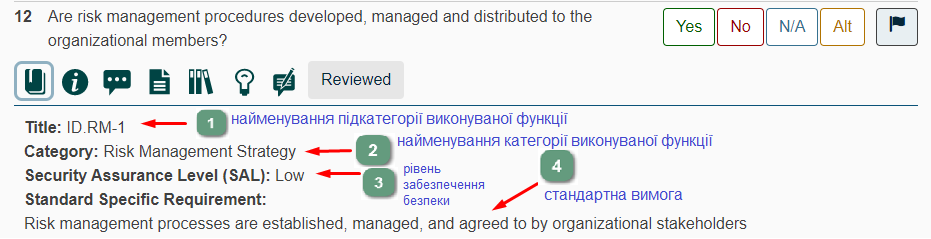
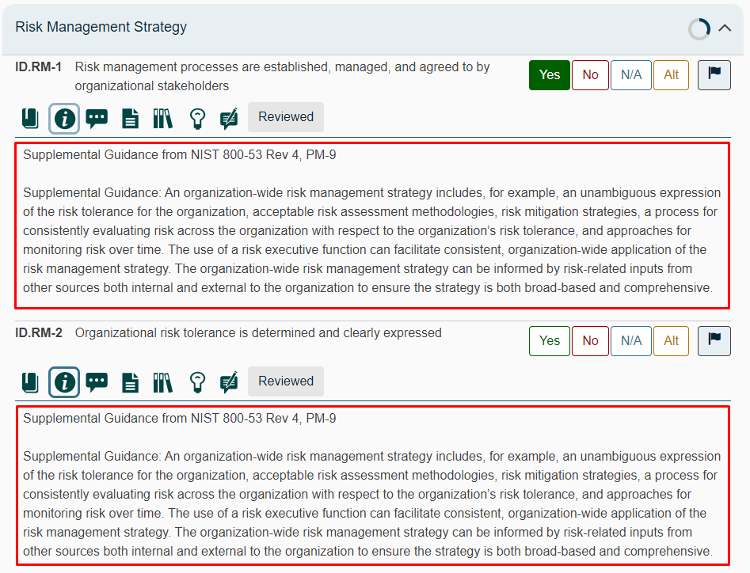
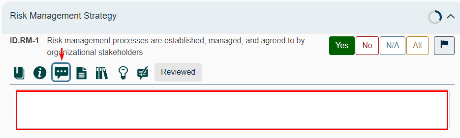
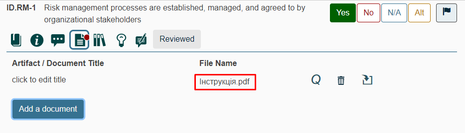
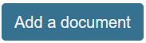
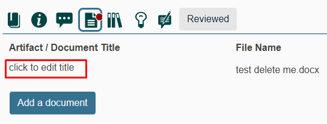
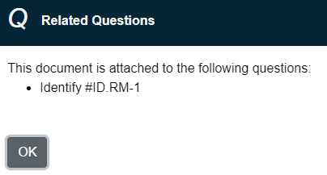

У даному розділі наведено опис основних компонентів макету опитувальника.
У режимі вимог, активуючи дії по піктограмі "Деталі/Стандарт", відображається: •ідентифікатор відповідної функції/категорії/підкатегорії; •рівень забезпечення безпеки (SAL); •пов'язані з даною вимогою запитання.
У режимі запитань, активуючи дії по піктограмі "Деталі/Стандарт", відображається: •ідентифікатор відповідної функції/категорії/підкатегорії; •рівень забезпечення безпеки (SAL); •пов'язана з даним запитання стандартна вимога 
|

Користувачі можуть звернутися до довідкових документів та додаткових інструкцій, інформація про які відображається при активації користувачем дій по піктограмі "Додаткові настанови".  Повторна активація дій по даній піктограмі приховує відображення додаткових настанов та/або інструкцій.
|
Активація дій по піктограмі "Коментарі" дозволяє експерту записувати неструктуровані коментарі до кожного питання під час оцінювання.  Навність червоного індикатора Зауваження. Поле для вводу коментарів - це багаторядкове текстове поле. Існує можливість змінити розмір поля: наводячи курсор миші на
Для відмови від вводу коментарів повторно активуйте дії по піктограмі "Коментарі". |


Активуючи дії по піктограмі "Артефакт/Документи", eксперти можуть додати відповідні докази до кожного запитання під час оцінювання.

Додані документи відображаються у списку у блоці Прикріплені артефакти/документи.
Для прикріплення документу та/або артефакту натисніть на кнопку  Наявність червоного індикатора - для видалення документу та/або артефакту активуйте дії по піктограмі "Видалити документ". - активуйте дії по вказаній піктограмі для завантаження документу на локальний носій.
Для зміни назви документу активуйте дії по наведеному на рисунку гіперпосиланню: 
Інформація щодо пов'язаних запитань відображається при активації дій по піктограмі "Пов'язані запитання" - 
|


Доступ до прикріплених документів, артефактів і доказів можна отримати в меню Інструменти
У модальному вікні Документи оцінювання відображається перелік всіх доданих до оцінювання документів. Для завантаження документу, який відображається у модальному вікні Документи оцінювання на локальний носій активуйте дії по піктограмі -
|